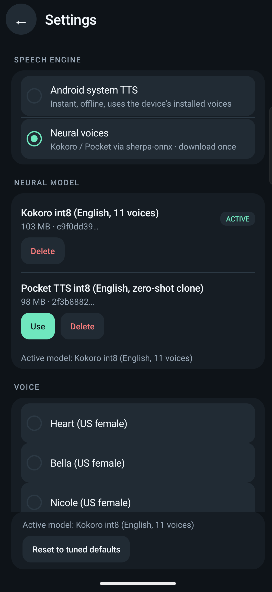

<template>
  <div data-hf-id="hf-002m" id="root" data-composition-id="04-voices" data-start="0" data-duration="3" data-width="1080" data-height="1920">
    <style>
@import url("../../assets/fonts/fonts.local.css");
* { margin: 0; padding: 0; box-sizing: border-box; }

#root {
  position: absolute;
  inset: 0;
  overflow: hidden;
  container-type: size;
  font-family: 'Inter', system-ui, sans-serif;
  color: #F1F6FA;
}

.v4-ground {
  position: absolute;
  inset: 0;
  background: radial-gradient(ellipse at 72% 28%, rgba(111, 231, 190, 0.07) 0%, transparent 58%), #0E1318;
  z-index: 0;
}

.v4-plate {
  position: absolute;
  left: 640px;
  top: 118px;
  width: 778px;
  height: 1684px;
  border: 1px solid #2C3944;
  border-radius: 24px;
  overflow: hidden;
  background: #161D24;
  z-index: 1;
  will-change: transform, opacity;
}

.v4-plate img {
  width: 100%;
  height: 100%;
  object-fit: cover;
  object-position: left top;
  display: block;
}

.v4-label {
  position: absolute;
  left: 84px;
  top: 420px;
  font-family: 'Inter', system-ui, sans-serif;
  font-weight: 500;
  font-size: 28px;
  letter-spacing: 0.28em;
  text-transform: uppercase;
  color: #6FE7BE;
  z-index: 2;
  opacity: 0;
  will-change: transform, opacity;
}

.v4-headline {
  position: absolute;
  left: 84px;
  top: 500px;
  display: flex;
  align-items: baseline;
  gap: 0.16em;
  font-family: 'Playfair Display', Georgia, serif;
  font-weight: 500;
  font-size: 92px;
  line-height: 1.0;
  color: #F1F6FA;
  overflow: hidden;
  height: 132px;
  z-index: 2;
}

.v4-numeral {
  font-size: 1.25em;
  line-height: 1.0;
  color: #6FE7BE;
  display: inline-block;
  opacity: 0;
  will-change: transform, opacity;
}

.v4-voices {
  color: #F1F6FA;
  display: inline-block;
  opacity: 0;
  will-change: transform, opacity;
}

.v4-subline {
  position: absolute;
  left: 84px;
  top: 640px;
  font-family: 'Inter', system-ui, sans-serif;
  font-weight: 400;
  font-size: 30px;
  line-height: 1.2;
  color: #F1F6FA;
  z-index: 2;
  opacity: 0;
  will-change: transform, opacity;
}

.v4-tick {
  position: absolute;
  left: 84px;
  top: 696px;
  width: 64px;
  height: 2px;
  background: #F4C66A;
  z-index: 2;
  opacity: 0;
  will-change: opacity;
}

.v4-caption {
  position: absolute;
  left: 84px;
  top: 760px;
  font-family: 'Inter', system-ui, sans-serif;
  font-weight: 400;
  font-size: 28px;
  line-height: 1.2;
  color: #9AA9B8;
  z-index: 2;
  opacity: 0;
  will-change: transform, opacity;
}
    </style>

    <div data-hf-id="hf-aa0x" id="v4-ground" class="v4-ground clip" data-start="0" data-duration="3" data-track-index="0"></div>

    <div data-hf-id="hf-scbd" id="v4-plate" class="v4-plate clip" data-start="0" data-duration="3" data-track-index="1" data-layout-allow-overflow>
      
    </div>

    <div data-hf-id="hf-34wv" id="v4-label" class="v4-label clip" data-start="0" data-duration="3" data-track-index="2">NEURAL VOICES</div>

    <div data-hf-id="hf-m8mg" id="v4-headline" class="v4-headline clip" data-start="0" data-duration="3" data-track-index="3">
      <span data-hf-id="hf-y7bo" class="v4-numeral">11</span><span data-hf-id="hf-ehak" class="v4-voices">voices.</span>
    </div>

    <div data-hf-id="hf-2m4j" id="v4-subline" class="v4-subline clip" data-start="0" data-duration="3" data-track-index="4">On device. Offline.</div>

    <div data-hf-id="hf-zfgi" id="v4-tick" class="v4-tick clip" data-start="0" data-duration="3" data-track-index="5"></div>

    <div data-hf-id="hf-7zh3" id="v4-caption" class="v4-caption clip" data-start="0" data-duration="3" data-track-index="6">Kokoro · 103 MB · no cloud</div>

    <script src="https://cdn.jsdelivr.net/npm/gsap@3.14.2/dist/gsap.min.js"></script>
    <script>
(function () {
  var root = document.getElementById('root');
  var plate = root.querySelector('.v4-plate');
  var label = root.querySelector('.v4-label');
  var numeral = root.querySelector('.v4-numeral');
  var voices = root.querySelector('.v4-voices');
  var subline = root.querySelector('.v4-subline');
  var tick = root.querySelector('.v4-tick');
  var caption = root.querySelector('.v4-caption');

  var tl = gsap.timeline({ paused: true });

  tl.fromTo(plate, { x: 160, opacity: 0 }, { x: 0, opacity: 1, duration: 0.9, ease: 'expo.out' }, 0);
  tl.fromTo(label, { y: 20, opacity: 0 }, { y: 0, opacity: 1, duration: 0.5, ease: 'power3.out' }, 0.15);
  tl.fromTo(numeral, { scale: 1.06, opacity: 0 }, { scale: 1.0, opacity: 1, duration: 0.4, ease: 'power3.out' }, 0.55);
  tl.fromTo(voices, { y: 40, opacity: 0 }, { y: 0, opacity: 1, duration: 0.5, ease: 'power3.out' }, 0.75);
  tl.fromTo(subline, { y: 20, opacity: 0 }, { y: 0, opacity: 1, duration: 0.5, ease: 'power3.out' }, 1.0);
  tl.fromTo(tick, { opacity: 0 }, { opacity: 1, duration: 0.4, ease: 'power3.out' }, 0.9);
  tl.fromTo(caption, { y: 20, opacity: 0 }, { y: 0, opacity: 1, duration: 0.5, ease: 'power3.out' }, 0.9);
  tl.to(plate, { scale: 1.02, duration: 0.9, ease: 'power2.out' }, 1.7);

  tl.seek(0);
  window.__timelines = window.__timelines || {};
  window.__timelines['04-voices'] = tl;
})();
    </script>
  </div>
</template>